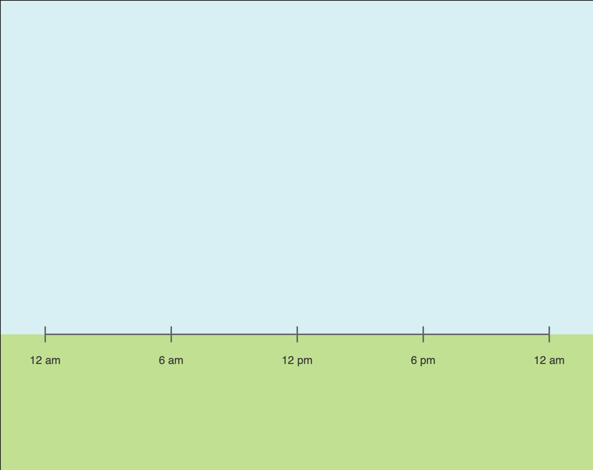
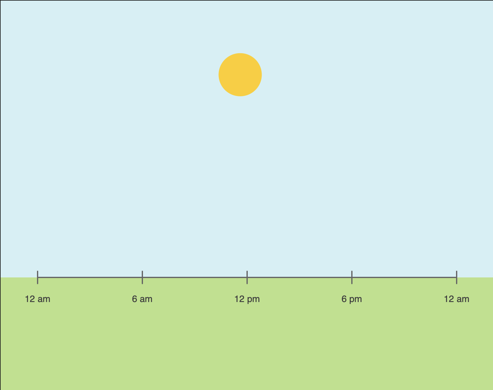
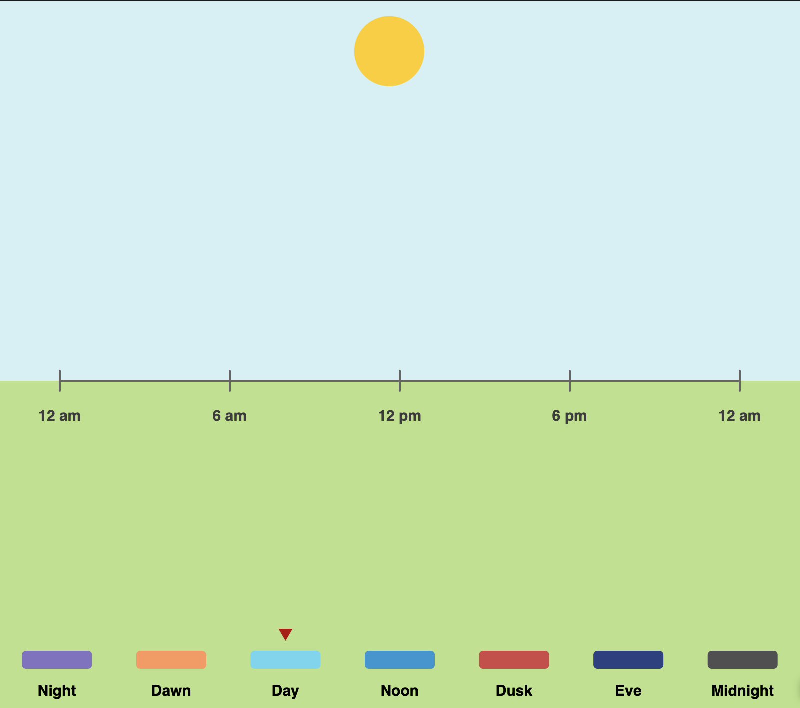
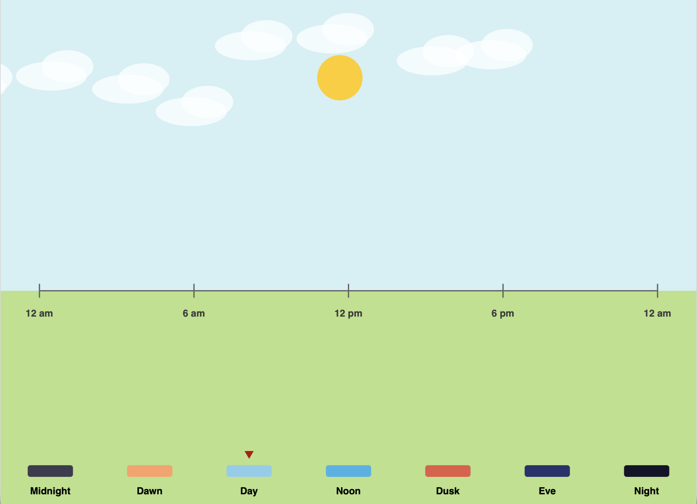
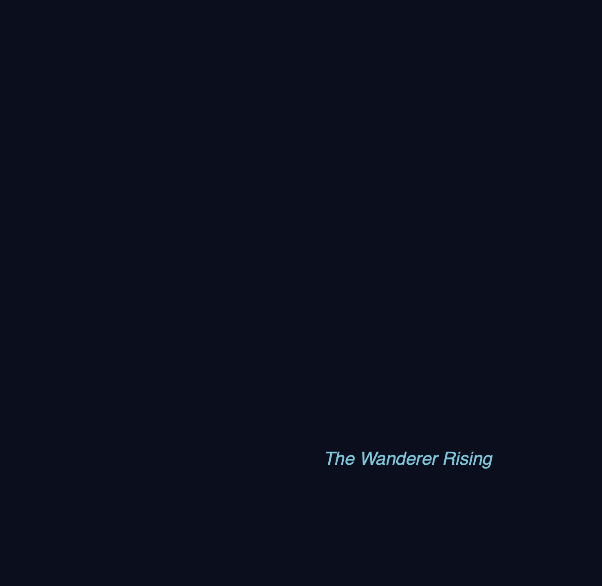
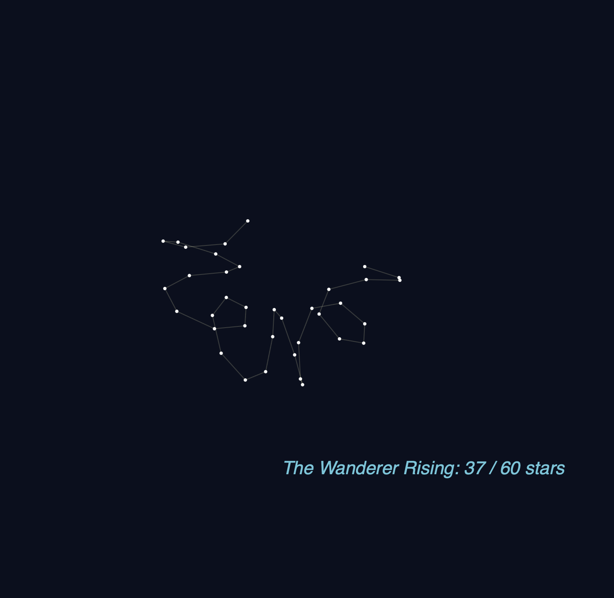
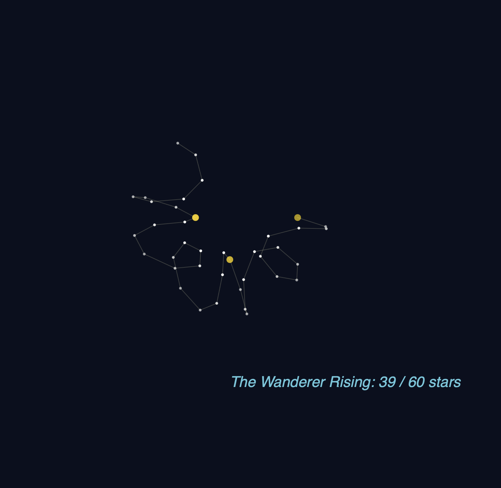
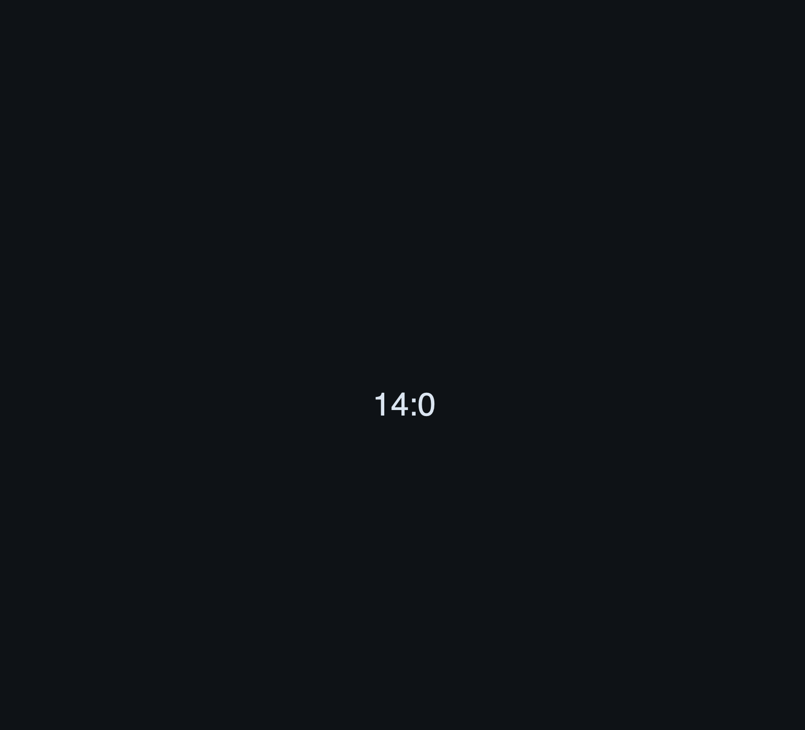
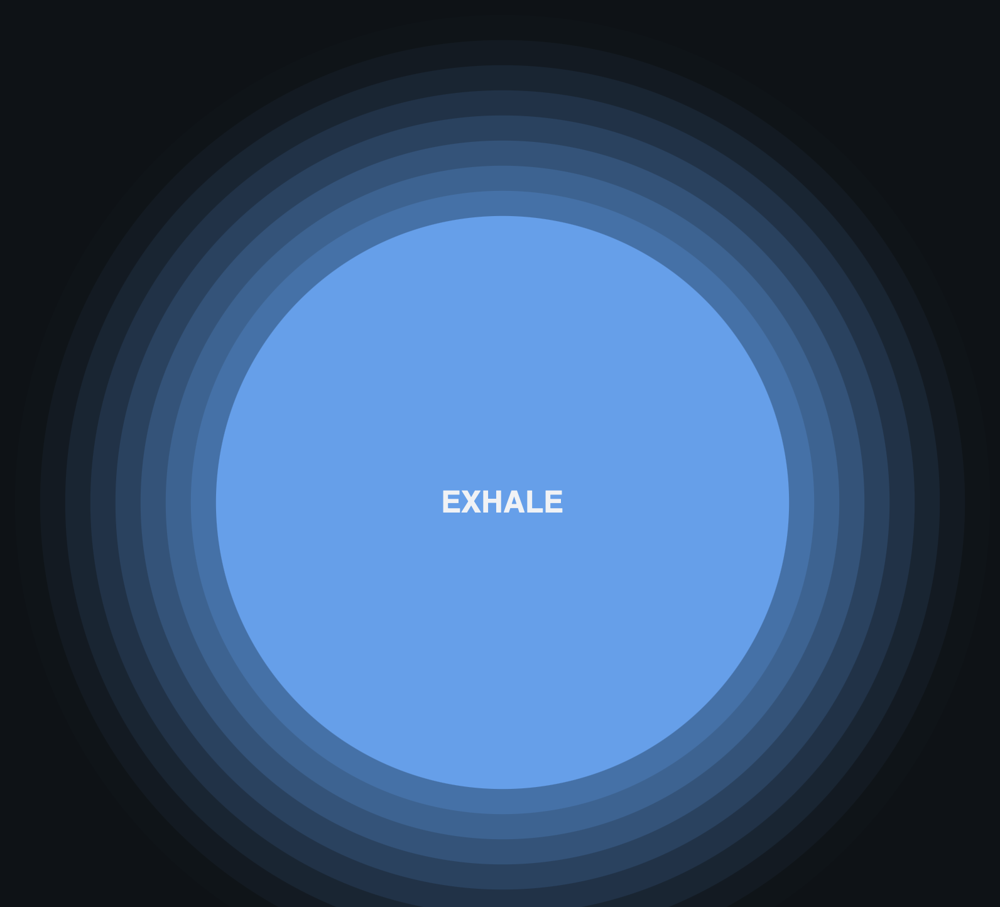
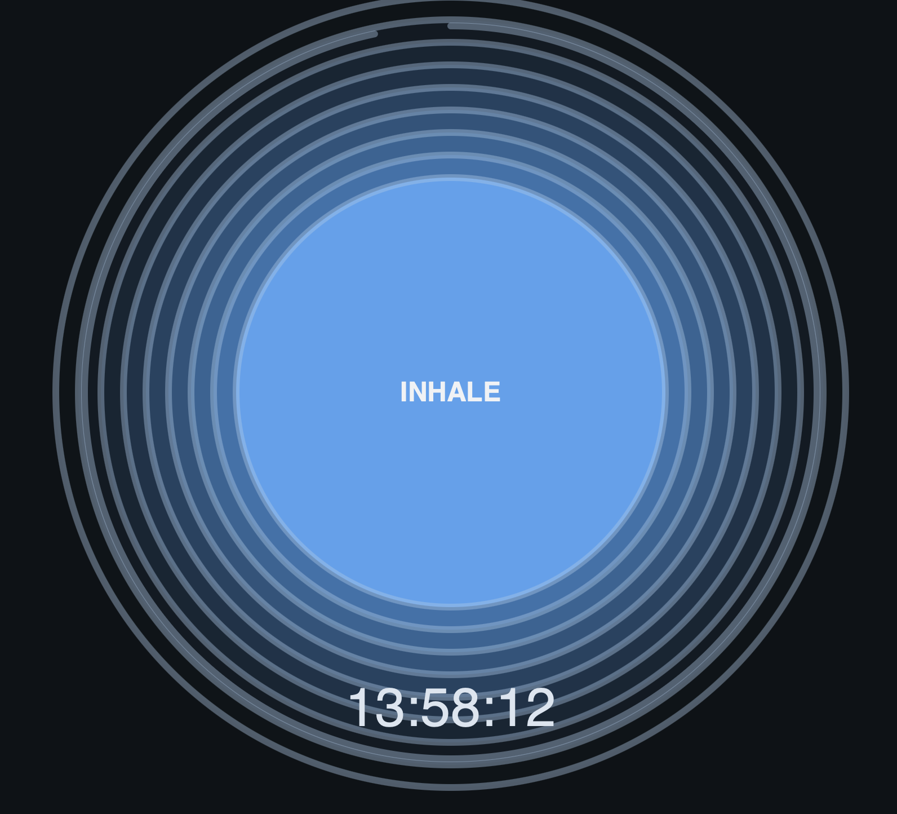

Solar Transit Narrative
Context: Designed for students, this visualization helps track the broader arc of the day to reduce "time anxiety" during long study sessions.
Design decisions: I mapped the 24-hour cycle to an equidistant horizontal path and a sine-wave arc to mimic natural circadian rhythms. The "Category" markers at the bottom provide perceptual anchors for the user to understand their stage in the day at a glance. [cite: 10, 115]
Future work: Adding real-time weather data to influence the cloud density.
Sketch evolution




The Constellation Narrative
Context: Targeted at late-night focus, representing time as a growing, beautiful form.
Design decisions: Minutes are encoded as rising stars. I used 15-minute "Key Stars" to provide quick temporal orientation without numerical distraction.
Future work: Interactive star-naming and different constellation shapes per hour.
Sketch evolution



The Breathing Circle Narrative
Context: A mindfulness tool for managing stress during intense study periods.
Design decisions: Radius is mapped to a 12-second breath cycle. HSL color shifts track the 24-hour day to maintain a subtle long-term awareness.
Future work: Toggleable breathing patterns for different relaxation needs.
Sketch evolution



Adapted from Golan Levin, 2016-2018